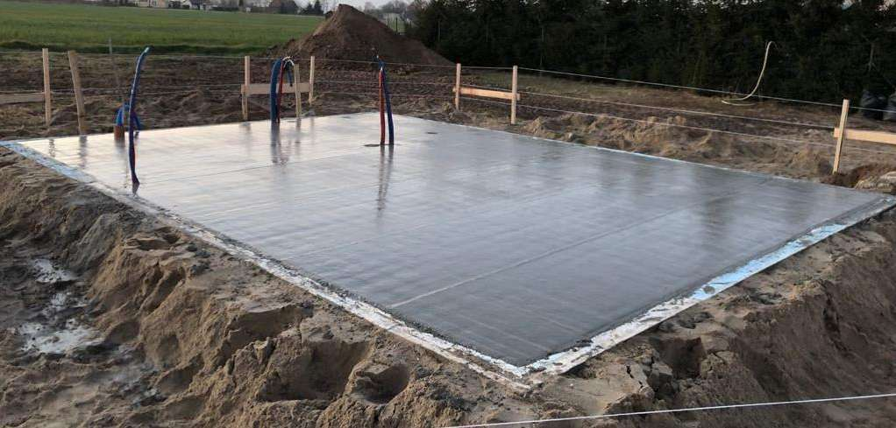
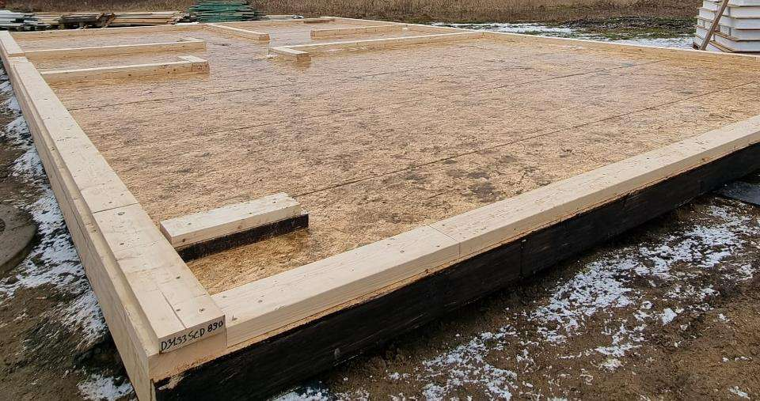

| SIP panel | 17,4 cm: EPS80 core 15 cm + 2 × 12 mm OSB-3 |
| Constructiebalken | C24 hout, geschaafd, toegepast per constructiezone |
| Openingen | Drievoudige beglazing, dakramen, anti-inbraak voordeur |
| Buitenschil | Membranen, gevelafwerking, dakafwerking, goten en hemelwaterafvoer |

